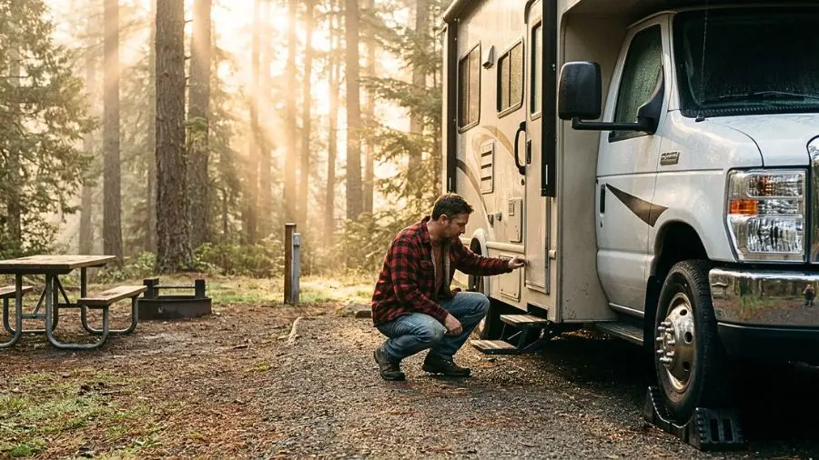

The RV Pre-Departure Safety Walkaround: Hitch Couplers, Breakaway Cables & Jack Locks

A 10-minute 360-degree walkaround before pulling out of camp prevents catastrophic highway trailer detachments, awning unrolls, and ruined slideout gears.
Every experienced RV traveler knows the unmistakable tension of pulling out of a campsite after a long weekend. You are running late for checkout, children or pets are distracting you, and rain is beginning to fall. This exact moment—rushing through departure prep—is when 90% of preventable highway RV accidents originate: unlatched hitch couplers, forgotten electrical cords, deployed roof vents, and unretracted stabilizer jacks.
1. The Disciplined 360-Degree Walkaround Rule
Never rely on memory. Professional drivers enforce a strict rule: The Walkaround is Completed in Absolute Silence. No conversations, no radio, no multitasking. Walk clockwise around the entire perimeter of the rig, visually touching and verifying every critical mechanical system.
2. Critical Hitching & Coupler Verification
- Coupler Latch Engagement: Just because the latch handle clicked down does NOT mean the trailer is hooked to the ball. The internal locking jaw often gets caught on top of the
2-5/16"ball lip (a 'false latch'). Always crank the tongue jack down until it lifts the truck bumper 2 inches: if the ball lifts with the coupler, it is locked. - Steel Linchpin Lock: Always insert a steel locking bail pin or padlock through the latch hole. Road vibrations can bounce an unpinned coupler latch wide open.
- Crossed Safety Chains: Chains must be crossed beneath the coupler in an "X" cradle, with enough slack to permit sharp 90-degree turning without binding, but short enough that the tongue cannot strike the road surface if detached.
- Emergency Breakaway Cable: Clip the breakaway switch lanyard directly to the Tow Vehicle Chassis or Hitch Receiver Frame—NEVER to the hitch ball or safety chains! If the receiver fails, the pin must pull to activate the onboard trailer electric brakes.
3. Exterior Systems & Mechanical Clearances
| System | Inspection Check | Failure Hazard |
|---|---|---|
| Stabilizer Jacks | Retracted 100% to travel stops | Ripping off jacks and bending chassis on driveway curbs |
| Patio Awning | Rolled tight, travel locks clicked | Highway wind catching fabric, tearing awning off sidewall |
| Slideout Mechanisms | Seals compressed, travel bars locked | Hydraulic drift into opposing traffic lanes during transit |
| Roof Vents & Antennas | Cranked fully down and seated | Snapped plastic vent lids by low branches and 65 mph wind |
4. Interior Securing and Fridge Leveling Check
Before moving, lock the refrigerator travel door latches, close roof vents, and ensure heavy gear is secured over or forward of trailer axles. When you arrive at your next campsite, park level within 3 degrees to preserve absorption fridge cooling loops.
Dial in your exact RV level, tow hitch height, and side-to-side pitch quickly with RV & Home Leveler: Solar, HVAC on your smartphone to ensure stress-free camping at every stop.
🚐 Live RV Leveling & Absorption Fridge Safety Simulator
Dual-Axis LevelerCalculate exact leveling block heights under tires & protect your absorption fridge ammonia boiler:
Fridge Status: ✅ SAFE (<3.0° Tilt) — Ammonia refrigerant circulates freely by gravity.
RV & Home Leveler: Solar, HVAC
Park perfectly level without leaving your driver's seat. Voice-guided leveling calculates exact block heights under each tire based on your wheelbase. Includes 3° absorption fridge safety warning, off-grid LiFePO4/AGM solar calculator, and diesel heater altitude tuning.
✓ Free on Android (Google Play) • ✓ Works 100% Offline • ✓ 0% Crashes
Frequently Asked Technical Question
Why must trailer safety chains always be crossed in an 'X' pattern under the hitch tongue?
Crossing trailer safety chains in an 'X' pattern beneath the hitch coupler creates a protective physical cradle. If the hitch ball detaches or unlatches while towing at highway speeds, the descending trailer tongue drops safely into the crossed chain cradle rather than digging violently into the asphalt, which would vault the trailer into the air and trigger a catastrophic rollover accident.